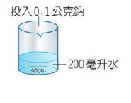
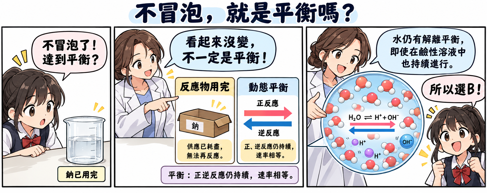
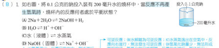
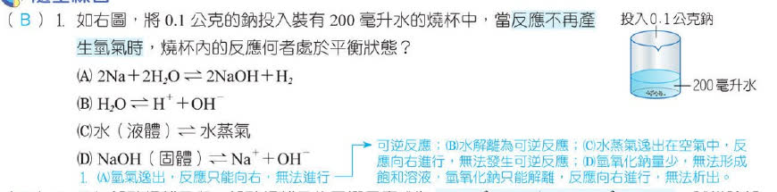

分享原卷｜第 1 題
完整原題

如右圖，將0.1公克的鈉投入裝有200毫升水的燒杯中，當反應不再產生氣體時，燒杯內的反應何者處於平衡狀態？
（原圖為開口燒杯，裝有200毫升水並投入0.1公克鈉。）
(A) 2Na＋2H₂O ⇌ 2NaOH＋H₂
(B) H₂O ⇌ H⁺＋OH⁻
(C) 水（液體）⇌水蒸氣
(D) NaOH（固體）⇌ Na⁺＋OH⁻
先想一想，再查看答案、解說與原圖
原卷作答：A
正確答案：B。水的微量解離與離子重新結合可達動態平衡，即使溶液呈鹼性仍存在此平衡。
逐項解析
| 選項與原句 | 判讀 | 句意與判斷理由 |
|---|---|---|
| (A) 2Na＋2H₂O ⇌ 2NaOH＋H₂ | 不選 | 鈉已反應完且氫氣逸散，不能僅把單向反應寫成可逆箭號就當作平衡。 |
| (B) H₂O ⇌ H⁺＋OH⁻ | 應選 | 水的微量解離與離子重新結合可達動態平衡，即使溶液呈鹼性仍存在此平衡。 |
| (C) 水（液體）⇌水蒸氣 | 不選 | 開口燒杯中的水蒸氣可向外散失，並非題目中密閉系統的液氣平衡。 |
| (D) NaOH（固體）⇌ Na⁺＋OH⁻ | 不選 | 少量生成的氫氧化鈉溶解並解離，沒有剩餘固體與離子間的溶解平衡。 |
詳細說明與解題步驟
一、先判斷不再冒泡的原因
鈉用量只有0.1公克，水有200毫升。氣泡停止表示鈉反應完，並不是鈉與水的正、逆反應速率相等。因此A不成立。
二、找出仍能雙向進行的過程
燒杯內有水及溶解的氫氧化鈉。水仍會微量解離，H⁺與OH⁻也可重新形成水，兩個方向在適當條件下達到動態平衡，故選B。鹼性溶液並不代表水完全不解離，也不代表H⁺濃度一定等於OH⁻。
三、檢查系統是否允許反向補回
燒杯開口，水蒸氣能散失；氫氧化鈉用量少且溶解，沒有固體殘留，故不選C、D。
快速判斷：「反應停止」不等於「化學平衡」。先問是反應物耗盡，還是正逆反應速率相等。

核對註記：已核對題幹、全部選項與必要材料；教材對應課次未確認，歸綜合。 冊次／章節依原對話教用PDF第四冊單元9核對。
原圖（僅本題）

